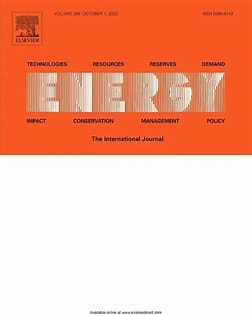

About Me
I am currently an MPhil student in Mathematics at Newcastle University, supervised by Prof. .
I received my Bachelor's degree in Mathematics and Applied Mathematics from Chongqing University of Arts and Sciences.
My research interests include Probabilistic Machine Learning, Computational Statistics, and I am also passionate about Deep Learning.
Recent News
- Wait for good things to happen!
Research Interests
- Probabilistic Machine Learning
- Computational Statistics
- Deep Learning
Publications

A novel offshore wind power prediction model based on TCN-DANet-sparse transformer and considering spatio-temporal coupling in multiple wind farms
Energy, Nov 2024

CoGraphNet for enhanced text classification using word-sentence heterogeneous graph representations and improved interpretability
scientific reports, Jan 2025
Awards
- University-level Special Scholarships (2021, 2022, 2023)
- Professional First-Class Scholarship (2021, 2022, 2023)
- Second Prize, National University Student Statistical Modeling Competition (2022, 2023)
- Meritorious Winner, International Mathematics Modeling Contest for Higher Education (2023)
- Second Prize, China Undergraduate Mathematical Contest in Modeling (CUMCM 2023)